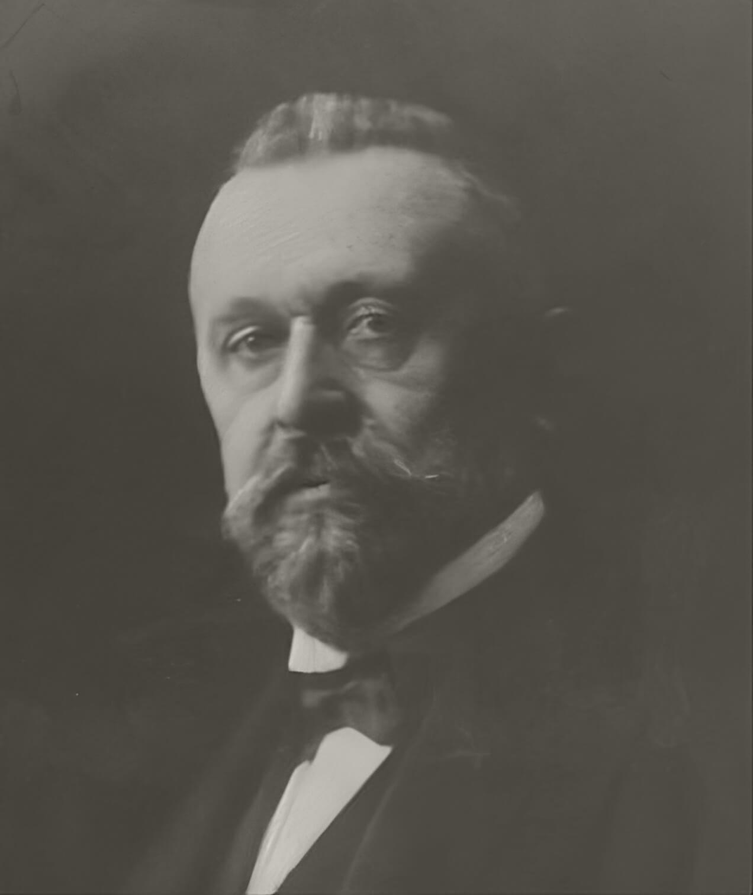

Willkommen
Diese Webseite ist eine Vorstudie für eine geplante kritische online-Edition der gesamten Tagebücher des altösterreichischen Politikers Joseph Maria Baernreither.


Joseph Maria Baernreither (1845–1925)
Joseph Maria Baernreither, Jurist und Erbe eines landtäflichen Gutes im Nordwesten Böhmens, war von 1878 bis 1883 und von 1901 bis 1913 Abgeordneter des Großgrundbesitzes im böhmischen Landtag. Von 1885 bis zur Einführung des Allgemeinen Wahlrechtes 1907 war er Mitglied des Abgeordnetenhauses, dann des Herrenhauses des österreichischen Reichsrates. Im März 1898 wurde er als Handelsminister in das Kabinett des Grafen Franz Thun-Hohensteins berufen, trat aber bereits im Oktober von diesem Amt zurück. Neben seinem politischen Wirken in der Fraktion des Verfassungstreuen Großgrundbesitzes ist sein sozialpolitisches Engagement als Mitinitiator der beiden österreichischen Kinderschutzkongresse 1907 und 1912 sowie als Mitbegründer und Präsident der Zentralstelle für Kinderschutz und Jugendfürsorge hervorzuheben. Von Ende Dezember 1916 bis zur Demission des Kabinetts des Grafen Heinrich Clam-Martinic im Juni 1917 war er als Minister ohne Portefeuille beauftragt, ein Ministerium für soziale Fürsorge zu konzipieren.
Baernreithers Tagebücher und Lebenserinnerungen
Baernreither begann 1898 im Rückblick auf die schweren innenpolitischen Krisen, die auf den Erlass der Badenischen Sprachverordnungen 1897 folgten, ein politisches Tagebuch zu führen. Zunächst noch in größeren Intervallen verfasst, entwickelten sich seine Aufzeichnungen immer mehr zu einer eindrucksvollen Quelle für das politische Tagesgeschehen der beiden letzten Jahrzehnte der Habsburgermonarchie. Zusätzlich zu den insgesamt 19 Bänden Tagebücher, die er bis Ende 1918 verfasste, sind zahlreiche Notizen zu Gesprächen mit bedeutenden Persönlichkeiten des öffentlichen Lebens (Politikern, Journalisten, Wirtschaftswissenschaftern) erhalten.
Die Tagebücher Baernreithers sind in zwei unterschiedlichen Versionen überliefert: neben den 19 Bänden Originaltagebücher verfasste Baernreither in seinen letzten Lebensjahren auch eine Art politischer Lebenserinnerungen, die er aus seinen Tagebüchern kompilierte und mit autobiographischen Erzählungen ergänzte. Er betitelte diese als „Fragmente eines politischen Tagebuches“. Diese „Fragmente“ sind in acht Bänden für die Zeit von 1897 bis ca. 1912 und für jene Monate 1917, in denen er das Ministerium für Soziale Fürsorge organisatorisch plante, als maschinschriftliche, gebundene Typoskripte vorhanden. Zwei lose, nicht gebundene Typoskripte behandeln die „Südslawische Politik“ und die Zeit „Vor dem Weltkrieg“. Für die umfangreichen Kriegstagebücher gibt es keine Entsprechung in den „Fragmenten“, es finden sich darin allerdings Spuren der Vorarbeiten für die Lebenserinnerungen.
In seinem Testament vermachte Baernreither seinen schriftlichen Nachlass zur Veröffentlichung seinen Kollegen und Freunden Karl Urban, Josef Redlich und Oskar Mitis. Die beiden Letzteren veröffentlichten 1928 und 1938 zwei Bände der „Fragmente eines politischen Tagebuches“ auf Basis des vorhandenen Typoskriptes – nicht der Originaltagebücher. Diese blieben ebenso wie die Kriegstagebücher bisher unveröffentlicht. Der 56 Kartons umfassende Nachlass Baernreithers befindet sich im Haus-, Hof- und Staatsarchiv.